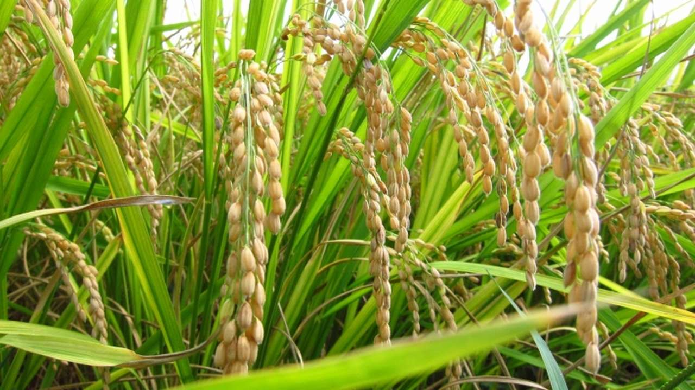

Crop_Details
This is a place where you can find each and every thing about the crop that you want to grow.
- Rice
- Wheat
- Greengram
- Tomato
- Brinjal
- LadysFinger
- Radish
| Rice | |||
|  | |||
| Name : Rice | Span : 90-110 days | ||
| Type : Kharif/winter | Water Required for crop : 4000-5000 per kg | ||
| Pesticides : fungicides, herbicides, insecticides. | Pests/dieseases : Planthoppers and Leafhoppers | ||
| Quantity demanded of rice : 51 million tons per year. | Maximum price of Rice : 5400.00 INR/Quinta | ||
| Chance of getting Profit: 59% | Chance of getting Loss : 41%; | ||
| Wheat | |||
 | |||
| Name : Wheat | Span : 360 days | ||
| Type : Winter and spring wheat | Water Required for crop : 2731 m3 to 3760m3 water per hectare | ||
| Pesticides : organochlorines, organophosphates, and synthetic pyrethroids | Pests/dieseases : Wheat midges, Hessian Fly, Wheat Stem Sawfly, Thrips, Aphids, Cutworms, Armyworms, Cereal Leaf Beetle, Helicoverpa species, and Mites. | ||
| Quantity demanded of Wheat : 778 million metric tons | Maximum price of Wheat : 270.5 per KG | ||
| Chance of getting Profit: 60% | Chance of getting Loss : 40%; | ||
| Green gram | |||
 | |||
| Name :Greengram | Span : 20-30 post 9wing | ||
| Type : Kharif / Summer | Water Required for crop : 300-400nm | ||
| Pesticides : diafenthiuron 50 wp @ 240 gm per acre 200 liters of water or acetamiprid 20 sp @ 40 gm per 200 liters of water. | Pests/dieseases : pod borers, stem borers, leaf miners, foliage caterpillars, cutworms, jassids, aphids and whiteflies | ||
| Quantity demanded of greengram : 220.5 lakh tons | Maximum price of greengram :500 per Quinta | ||
| Chance of getting Profit: 74% | Chance of getting Loss : 26%; | ||
| Tomato | |||
 | |||
| Name :Tomato | Span : 90-150 | ||
| Type : Autumn / Spring Summer | Water Required for crop : 400-600nm | ||
| Pesticides : diafenthiuron 50 wp @ 240 gm per acre 200 liters of water or acetamiprid 20 sp @ 40 gm per 200 liters of water. | Pests/dieseases : pod borers, stem borers, leaf miners, foliage caterpillars, cutworms, jassids, aphids and whiteflies | ||
| Quantity demanded of Tomato : 220.5 lakh tons | Maximum price of Tomato :500 per Quinta | ||
| Chance of getting Profit: 74% | Chance of getting Loss : 26%; | ||
| Brinjal | |||
 | |||
| Name :Brinjal | Span : 90-150 | ||
| Type : Autumn / Spring Summer | Water Required for crop : 400-600nm | ||
| Pesticides : diafenthiuron 50 wp @ 240 gm per acre 200 liters of water or acetamiprid 20 sp @ 40 gm per 200 liters of water. | Pests/dieseases : pod borers, stem borers, leaf miners, foliage caterpillars, cutworms, jassids, aphids and whiteflies | ||
| Quantity demanded of Brinjal : 220.5 lakh tons | Maximum price of Brinjal :500 per Quinta | ||
| Chance of getting Profit: 74% | Chance of getting Loss : 26%; | ||
| LadysFinger | |||
 | |||
| Name :LadysFinger | Span : 90-150 | ||
| Type : Autumn / Spring Summer | Water Required for crop : 400-600nm | ||
| Pesticides : diafenthiuron 50 wp @ 240 gm per acre 200 liters of water or acetamiprid 20 sp @ 40 gm per 200 liters of water. | Pests/dieseases : pod borers, stem borers, leaf miners, foliage caterpillars, cutworms, jassids, aphids and whiteflies | ||
| Quantity demanded of LadysFinger : 220.5 lakh tons | Maximum price of LadysFinger :500 per Quinta | ||
| Chance of getting Profit: 74% | Chance of getting Loss : 26%; | ||
| Radish | |||
 | |||
| Name :Radish | Span : 90-150 | ||
| Type : Autumn / Spring Summer | Water Required for crop : 400-600nm | ||
| Pesticides : diafenthiuron 50 wp @ 240 gm per acre 200 liters of water or acetamiprid 20 sp @ 40 gm per 200 liters of water. | Pests/dieseases : pod borers, stem borers, leaf miners, foliage caterpillars, cutworms, jassids, aphids and whiteflies | ||
| Quantity demanded of Radish: 220.5 lakh tons | Maximum price of Radish :500 per Quinta | ||
| Chance of getting Profit: 74% | Chance of getting Loss : 26%; | ||